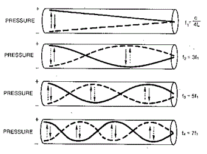

Phys 1100, Acoustics (Fall 2010)
TTh 7:00-8:20pm, Br 224
Syllabus
Lectures
On-Line Materials
Important Dates:
The main topics of study in Phys 1100 are:
- Oscillations; waves; sound waves.
- Musical scales and notation. Musical instruments.
- Recording and amplification of sound.
- Concert halls